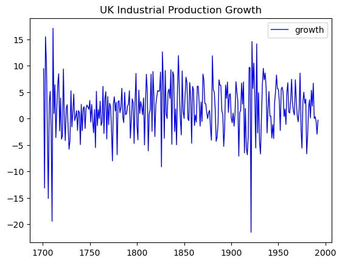
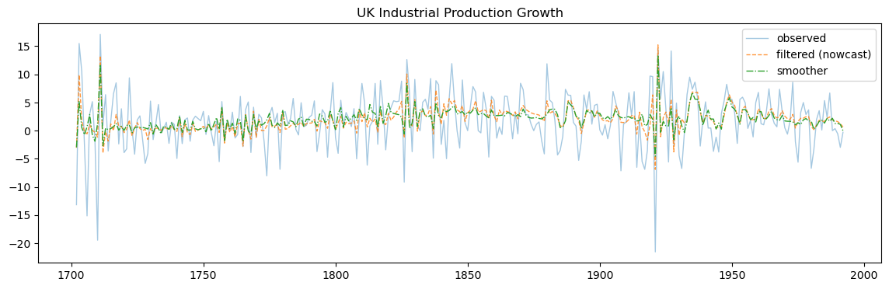
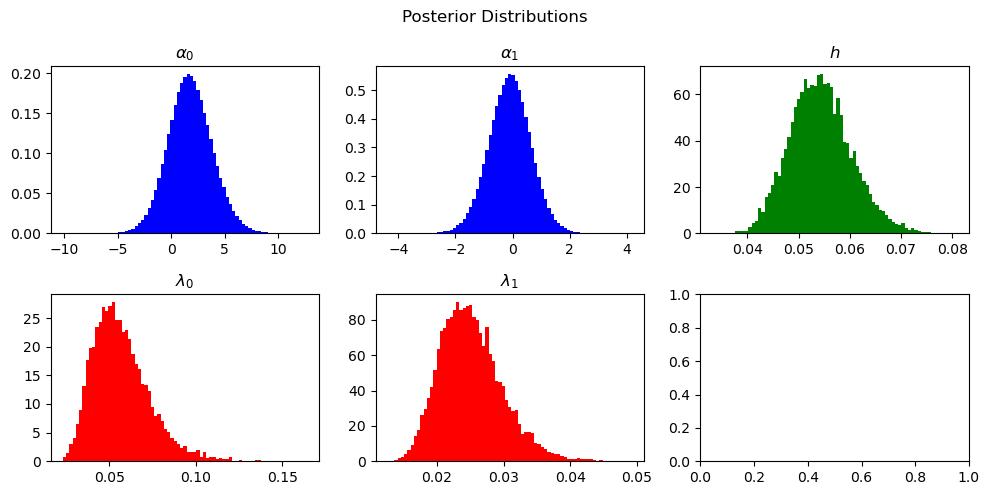
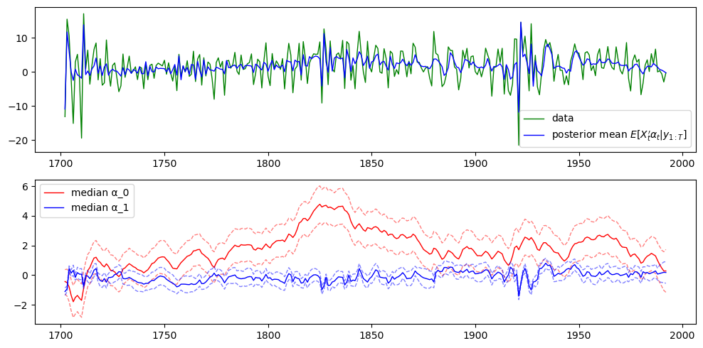
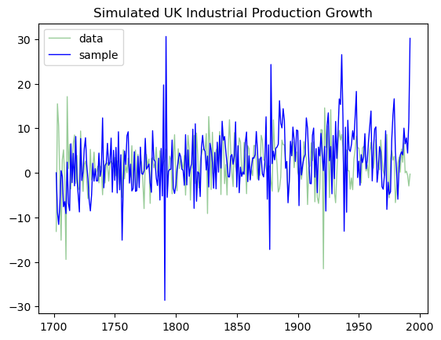

Time Varying Parameter AR Model#
The following model was treated in a course taught by Dimitris Korobilis in a summer school taught at the Barcelona Graduate School of Economics in 2017. It is a simplified version of Primiceri (2005), who uses a time varying parameter (TVP) model to investigate historical changes in the way monetary policy has been transmitted in the US. The data set we will be using has nothing to do with this application, and consists of the annual percentage change in UK industrial production from 1701-1992. In order to investigate whether the dynamic structure of this time series model is changing over time, we use an AR(p) model with time-varying coefficients:
where for i = 0, \dots, p
We furthermore assume that \varepsilon_t \sim_{iid} N(0, h^{-1}) and u_{it} \sim_{iid} N(0, \lambda_i h^{-1}) where \varepsilon_t, u_{is}, and u_{jr} are independent of one another for all s, t, r, i, and j. We use a slightly informative prior for the parameters h and \lambda_i for i = 0, \dots, p. For h, use a Gamma prior with \underline\nu = 1 and \underline s^{-2} = 1. For \lambda_i^{-1}, use Gamma priors with \underline\nu_i = 1 and \underline\lambda_i = 1. With this prior, the conditional posteriors have the form:
for i = 0, \dots, p, where
and
We will write code which implements the Gibbs sampling algorithm for the model.
References: 1. De Jong, Shephard (1995) - The Simulation Smoother for Time Series Models
-
Carter, Kohn (1994) - On Gibbs Sampling for State Space Models
-
Primiceri (2005) - Time Varying Structural Vector Autoregressions and Monetary Policy
## import data
import pandas as pd
import numpy as np
from numba import jit, njit, prange
import matplotlib.pyplot as plt
## load data from txt file
y_raw = np.loadtxt('./data/uk_ind_prod_growth.txt')*100
years_raw = [1701 + i for i in range(len(y_raw))]
df = pd.DataFrame(y_raw, columns=['growth'], index=years_raw)
df.plot(title='UK Industrial Production Growth', color='blue', linewidth=1)
<Axes: title={'center': 'UK Industrial Production Growth'}>

State-Space Representation#
The Time-Varying Parameter (TVP) model can be expressed in state-space form, which consists of an observation equation and a state equation.
-
Observation Equation
The observation equation relates the observed y_t to the state (parameters) \boldsymbol{\alpha}_t: $$ y_t = \mathbf{X}_t’ \boldsymbol{\alpha}_t + \varepsilon_t, $$ where:
- \mathbf{X}_t = [1, y_{t-1}, y_{t-2}, \dots, y_{t-p}]' is a (p+1) \times 1 vector of predictors (including the intercept as the first entry),
- \boldsymbol{\alpha}_t = [\alpha_{0,t}, \alpha_{1,t}, \dots, \alpha_{p,t}]' is a (p+1) \times 1 vector of time-varying parameters,
- \varepsilon_t \sim N(0, h^{-1}) is the observation noise.
This can be written compactly as: $$ y_t = \mathbf{X}_t’ \boldsymbol{\alpha}_t + \varepsilon_t, \quad \varepsilon_t \sim N(0, h^{-1}). $$
-
State Equation
The state equation describes the evolution of the time-varying parameters \boldsymbol{\alpha}_t over time: $$ \boldsymbol{\alpha}_{t+1} = \boldsymbol{\alpha}_t + \mathbf{u}_t, $$ where: - \mathbf{u}_t \sim N(\mathbf{0}, \mathbf{Q}), - \mathbf{Q} = \text{diag}([\lambda_0 h^{-1}, \lambda_1 h^{-1}, \dots, \lambda_p h^{-1}]) is a diagonal covariance matrix representing the process noise for each parameter.
This can be written compactly as: $$ \boldsymbol{\alpha}_{t+1} \sim N(\boldsymbol{\alpha}_t, \mathbf{Q}). $$
Kalman Filter and Smoother#
The state-space representation allows you to apply the Kalman filter for forward filtering (estimating \boldsymbol{\alpha}_t given y_{1:t} = \{y_1, ..., y_t\}) and the Kalman smoother for backward smoothing (estimating \boldsymbol{\alpha}_t given y_{1:T}). Our first objective is to set up the Kalman filter to obtain state means (given the observations and the distribution of u and \varepsilon). We also call these means filtered (state) estimates. The Kalman filter consists of the following equations (see Primiceri, 2005):
-
Initialization Start with an initial guess for the state vector \boldsymbol{\alpha}_0 and its covariance \mathbf{P}_0: \boldsymbol{\alpha}_0 \quad \text{and} \quad \mathbf{P}_0 = \text{Cov}(\boldsymbol{\alpha}_0)
-
Prediction Step Predict the state and its uncertainty at time t: \hat{\boldsymbol{\alpha}}_{t|t-1} = \hat{\boldsymbol{\alpha}}_{t-1|t-1} and \mathbf{P}_{t|t-1} = \mathbf{P}_{t-1|t-1} + \mathbf{Q}. The prediction assumes the state evolves with added process noise from \mathbf{Q}.
-
Measurement Update (Correction Step) Use the new observation y_t to correct the state estimate.
-
Compute the prediction error (innovation): v_t = y_t - \mathbf{X}_t' \hat{\boldsymbol{\alpha}}_{t|t-1}
-
Compute the innovation covariance: S_t = \mathbf{X}_t' \mathbf{P}_{t|t-1} \mathbf{X}_t + h^{-1}
-
Compute the Kalman gain: \mathbf{K}_t = \mathbf{P}_{t|t-1} \mathbf{X}_t \cdot S_t^{-1}
-
Update the state estimate: \hat{\boldsymbol{\alpha}}_{t|t} = \hat{\boldsymbol{\alpha}}_{t|t-1} + \mathbf{K}_t v_t
-
Update the covariance estimate: \mathbf{P}_{t|t} = \mathbf{P}_{t|t-1} - \mathbf{K}_t \mathbf{X}_t' \mathbf{P}_{t|t-1}
-
-
Iterate Repeat the prediction and correction steps for t = 1, 2, \dots.
# First, we need to generate the lagged variables
# for the state space form of this model
p = 1
X = np.ones((len(y_raw), p+1))
y_lag = y_raw.copy()
for j in range(1,p+1):
y_lag = np.concatenate([[np.nan], y_lag[:-1]])
X[:, j] = y_lag
X = X[p:, :]
y = y_raw[p:]
years = years_raw[p:]
Now, implement the Kalman filter. I call the matrices similar to the naming conventions in Primiceri (2005):
# set up the kalman filter for a general state space model
# but encapsulate performance routines for the TVP-AR(p) model
# at hand.
@njit
def kalman_filter(y, X, Q, R, F=None, malpha_init=None, Palpha_init=None):
"""
Kalman filter corresponding to the following state space model:
y_t = X_t' α_t + ε_t
α_t = F α_{t-1} + u_t
ε_t ~ N(0, R)
u_t ~ N(0, Q)
"""
p = X.shape[1] - 1 # number of explanatory variables
T = len(y)
dim = p + 1
# Preallocate
malphas = np.zeros((T+1, dim))
malphas_pred = np.zeros((T+1, dim)) # prediction current mean given previous data
Palphas = np.zeros((T+1, dim, dim))
Palphas_pred = np.zeros((T+1, dim, dim)) # prediction current variance given previous data
Ks = np.zeros(T) # Kalman gains
y_preds = np.zeros_like(y) # predictions; y_preds[t] = E[y_t | y_{1:t-1}]
y_nowcasts = np.zeros_like(y) # nowcast: y_nowcasts[t] = E[x_t' α_t | y_{1:t}]
# Initialize
## defaults for unconditional mean, variance, precision, lambdas
if malpha_init is None:
malpha_init = np.zeros(dim) # zero initial mean
if Palpha_init is None:
Palpha_init = np.eye(dim) * 1E9 # large initial variance
if F is None:
F = np.eye(dim) # transition matrix
idtrnsm = True
else:
idtrnsm = False
# construct initial values for Kalman matrices
Palphas[0] = Palpha_init # current variance given current data
malphas[0] = malpha_init # filtered mean given current data
for t in range(T):
# prediction
if idtrnsm:
malphas_pred[t] = malphas[t] # malphas_pred[t] = E[α_t | y_{1:t-1}]
Palphas_pred[t] = Palphas[t] + Q # Palphas_pred[t] = Var[α_t | y_{1:t-1}]
else:
malphas_pred[t] = F @ malphas[t] # malphas_pred[t] = E[α_t | y_{1:t-1}]
Palphas_pred[t] = F @ Palphas[t] @ F.T + Q # Palphas_pred[t] = Var[α_t | y_{1:t-1}]
y_t = y[t]
x_t = X[t][np.newaxis, :]
y_pred = x_t @ malphas_pred[t]
# update
K = Palphas_pred[t] @ x_t.T / (x_t @ Palphas_pred[t] @ x_t.T + R) # Kalman gain
malpha = malphas_pred[t] + K @ (y_t - y_pred) # update mean
Palpha = Palphas_pred[t] - K.reshape(-1, 1) @ x_t @ Palphas_pred[t] # update variance
y_nowcast = x_t @ malpha # nowcast
# store results
y_preds[t] = y_pred[0]
y_nowcasts[t] = y_nowcast[0]
malphas[t+1] = malpha
Palphas[t+1] = Palpha
Ks[t] = K[0,0]
# final prediction
malphas_pred[-1] = malphas[-1]
Palphas_pred[-1] = Palphas[-1] + Q
# remove the initial value
malphas = malphas[1:]
Palphas = Palphas[1:]
return y_preds, y_nowcasts, malphas, Palphas, malphas_pred, Palphas_pred, Ks
The Kalman smoother is an extension of the Kalman filter that provides smoothed estimates of the states \boldsymbol{\alpha}_t by using all available data (past, present, and future observations). Unlike the filter, which only estimates states sequentially up to the current time t, the smoother improves accuracy by revisiting past state estimates during a backward pass.
Key Concepts:
- Kalman Filter: Forward pass (time 1 \to T), estimating \boldsymbol{\alpha}_t based on data up to t.
- Kalman Smoother: Backward pass (time T \to 1), refining \boldsymbol{\alpha}_t using future observations.
Kalman Smoother Steps:
-
Run the Kalman Filter forward in time (from t = 1 to t = T) to get the filtered estimates \hat{\boldsymbol{\alpha}}_{t|t} and covariance \mathbf{P}_{t|t}.
-
Backward Pass (Smoothing Step): For t = T-1, T-2, \dots, 1, compute the smoothed state estimate using information from future times.
Smoothing Equations:
-
Smoothing Gain: \mathbf{G}_t = \mathbf{P}_{t|t} \mathbf{P}_{t+1|t}^{-1}. This gain tells us how much of the future state \hat{\boldsymbol{\alpha}}_{t+1|T} should influence the current state.
-
Smoothed State Estimate: \hat{\boldsymbol{\alpha}}_{t|T} = \hat{\boldsymbol{\alpha}}_{t|t} + \mathbf{G}_t \big( \hat{\boldsymbol{\alpha}}_{t+1|T} - \hat{\boldsymbol{\alpha}}_{t+1|t} \big). This equation adjusts the filtered estimate \hat{\boldsymbol{\alpha}}_{t|t} using the future information from \hat{\boldsymbol{\alpha}}_{t+1|T}.
-
Smoothed Covariance: \mathbf{P}_{t|T} = \mathbf{P}_{t|t} + \mathbf{G}_t \big( \mathbf{P}_{t+1|T} - \mathbf{P}_{t+1|t} \big) \mathbf{G}_t'
By combining forward and backward passes, the Kalman smoother effectively reduces noise and enhances estimation accuracy, making it ideal for offline applications like retrospective analysis.
@njit
def kalman_smoother(y, malphas, Palphas, malphas_pred, Palphas_pred, X):
p = X.shape[1] - 1
dim = p+1
T = len(y)
# preallocate
smalphas = np.zeros((T, dim)) # smoothed mean
sPalphas = np.zeros((T, dim, dim)) # smoothed variance
y_smootheds = np.zeros_like(y) # smoothed estimate
# initialize
smalphas[-1] = malphas[-1]
sPalphas[-1] = Palphas[-1]
for t in np.arange(T-2, -1, -1): # Note that len(y)-2 = T-1; can't initialize from T
J = Palphas[t] @ np.linalg.inv(Palphas_pred[t]) # smoother gain
smalpha = malphas[t] + J @ (smalphas[t+1] - malphas_pred[t+1]) # smoothed mean
sPalpha = Palphas[t] + J @ (sPalphas[t+1] - Palphas_pred[t]) @ J.T # smoothed variance
y_smoothed = X[t] @ smalpha # smoothed estimate
# store results
smalphas[t] = smalpha
sPalphas[t] = sPalpha
y_smootheds[t] = y_smoothed
return y_smootheds, smalphas, sPalphas
We are ready to calculate and plot the Kalman filter and smoother estimates. We run the Kalman filter with large, diagonal \boldsymbol R, assuming that a lot of the variation in y is measurement error. Additionally, we assume small \boldsymbol Q, which implies that the state only changes slowly.
def plot_kalman(years, y, y_preds=None, y_nowcasts=None, y_smootheds=None):
plt.figure(figsize=(14, 4))
plt.title('UK Industrial Production Growth')
plt.plot(years, y, label='observed', linewidth=1, alpha=0.4)
if y_nowcasts is not None:
plt.plot(years, y_nowcasts, label='filtered (nowcast)', linestyle='--', linewidth=1, alpha=0.8)
if y_preds is not None:
plt.plot(years, y_preds, label='prediction', linestyle='-.', linewidth=1, color='black', alpha=0.7)
if y_smootheds is not None:
plt.plot(years, y_smootheds, label='smoother', linestyle='-.', linewidth=1)
plt.legend()
plt.show()
%%capture
y_preds, y_nowcasts, malphas, Palphas, malphas_pred, Palphas_pred, Ks = kalman_filter(y,
X,
Q=np.eye(p+1)/10, # innovations
R=np.eye(1)*30, # measurement error
Palpha_init=np.eye(p+1) * 1E-9)
y_smootheds, smalphas, sPalphas = kalman_smoother(y, malphas, Palphas, malphas_pred, Palphas_pred, X)
plot_kalman(years, y, y_nowcasts=y_nowcasts, y_smootheds=y_smootheds)
plt.show()

Gibbs Sampler#
Fantastic. The first step to implementing the full Gibbs sampler is completed. The Kalman filter/smoother is very helpful to generate samples of \boldsymbol \alpha_t | \{\text{others}\}. The exact way how to do this was developed in Carter and Kohn (1994) (CK) and De Jong and Shephard (1995). The CK method is
The Carter and Kohn method is a technique for drawing samples of the latent states \boldsymbol{\alpha}_t from their posterior distribution in a state-space model. This method is commonly used in Bayesian inference, such as in the Gibbs sampling framework, to sample from the joint posterior of the states and other model parameters.
We aim to draw samples of \boldsymbol{\alpha}_{1:T} from their posterior distribution: p(\boldsymbol{\alpha}_{1:T} | y_{1:T}, \mathbf{X}_{1:T})
Steps of the Carter and Kohn Method:#
-
Forward Pass (Kalman Filtering):
- Run the Kalman filter from t = 1 to t = T to obtain:
- The filtered mean \hat{\boldsymbol{\alpha}}_{t|t}
- The filtered covariance \mathbf{P}_{t|t}
-
Backward Pass (State Sampling):
Draw the states \boldsymbol{\alpha}_T, \boldsymbol{\alpha}_{T-1}, \dots, \boldsymbol{\alpha}_1 recursively starting from t = T and moving backward:
a. Sample \boldsymbol{\alpha}_T: Draw \boldsymbol{\alpha}_T from:
b. Sample \boldsymbol{\alpha}_{t} for t = T-1, T-2, \dots, 1: For each time step t, sample \boldsymbol{\alpha}_t from
The smoothed mean and covariance are given by:
-
Smoothed Mean: \hat{\boldsymbol{\alpha}}_{t|T} = \hat{\boldsymbol{\alpha}}_{t|t} + \mathbf{G}_t (\boldsymbol{\alpha}_{t+1} - \hat{\boldsymbol{\alpha}}_{t+1|t})
-
Smoothing Gain: \mathbf{G}_t = \mathbf{P}_{t|t} \mathbf{P}_{t+1|t}^{-1}
-
Smoothed Covariance: \mathbf{P}_{t|T} = \mathbf{P}_{t|t} + \mathbf{G}_t (\mathbf{P}_{t+1|T} - \mathbf{P}_{t+1|t}) \mathbf{G}_t'
-
Forecast Covariance: \mathbf{P}_{t+1|t} = \mathbf{P}_{t|t} + \boldsymbol Q
The function kalman_sample_nb below implements the CK method. I also invoke a routine mvn_sample to sample from a multivariate normal distribution using numba.
@njit
def mvn_sample(mean, cov):
"""
Draws a single sample from a multivariate normal distribution:
N(mean, cov)
Parameters
----------
mean : 1D np.ndarray
The mean vector of length d.
cov : 2D np.ndarray
The (d x d) covariance matrix.
Returns
-------
sample : 1D np.ndarray
A single draw from the specified MVN distribution.
"""
# Force the covariance matrix to be symmetric to avoid numerical issues
cov_sym = 0.5 * (cov + cov.T)
# Cholesky factor (lower triangular)
L = np.linalg.cholesky(cov_sym)
# Draw standard normals
z = np.random.randn(len(mean))
# Sample = mean + L * z
return mean + L @ z
@njit
def kalman_sample_nb(filtered_states, filtered_variances, Q):
"""
Draws from the Kalman smoother backward recursion a la Carter and Kohn (1994).
"""
fm, fP = filtered_states.copy(), filtered_variances.copy()
T = len(fm)
α_samples = np.empty((T, len(fm[0])))
α_samples[T-1] = mvn_sample(fm[T-1], fP[T-1]) # sample from the last state
for t in range(T-2, -1, -1):
V_tp1_t_inv = np.linalg.inv(fP[t] + Q) # Q is constant across time, varies across state variables
mean = fm[t] + fP[t] @ V_tp1_t_inv @ (α_samples[t+1] - fm[t])
var = fP[t] - fP[t] @ V_tp1_t_inv @ fP[t]
α_samples[t] = mvn_sample(mean, var)
return α_samples
Perfect! The rest is standard and can be implemented straightforwardly. The samplers for h and \lambda are defined below. Note that numpy uses the shape-scale parametrization of the Gamma distribution. I prefer the degrees-of-freedom-mean parametrization, hence I define gamma_from_mean_df additionally.
def gamma_from_mean_df(means, dfs):
means = np.asarray(means, dtype=np.float64)
dfs = np.asarray(dfs, dtype=np.float64)
scale = 2*means / dfs # beta or theta
shape = dfs/2 # alpha or k
return np.random.gamma(shape, scale)
def update_lam(α, h, lam0, nulam0):
T, dim = α.shape
u = α[1:,:] - α[:-1,:]
nulam1 = nulam0 + T
lam1 = np.zeros_like(lam0)
for j in np.arange(dim):
lam1[j] = (nulam0[j] * lam0[j] + (u[:,j]**2).sum()*h) / nulam1[j]
lam_new = gamma_from_mean_df(1/lam1, nulam1)
lam_new = 1/lam_new
lam_new[lam_new > 1E6] = 1E6
return lam_new
@njit
def get_ssr(y, X, α):
y_hat = (X * α).sum(axis=1)
return ((y - y_hat).T @ (y - y_hat))
def update_h(α, y, ssq0_inv, nu0):
T, _ = α.shape
ssq0 = ssq0_inv
nu1 = nu0 + T
ssr = get_ssr(y, X, α)
mu = 1 / ((ssr + ssq0 * nu0) / nu1)
h_new = gamma_from_mean_df(mu, nu1)
return h_new
Finally, we can put the samplers from conditional distributions together to create the Gibbs sampler. Since we use fast operations and numbas @njit in many places, the Gibbs sampler is conveniently fast!
from tqdm import trange
nu0 = 1
ssq0_inv = 1
lam0 = np.ones(p+1)
nulam0 = np.ones(p+1)
burn_in = 1_000
n_draws = 10_000
h_init = 1
T = len(y)
# preallocate
h_samples = np.zeros(n_draws)
lam_samples = np.zeros((n_draws, p+1))
alpha_samples = np.zeros((n_draws, len(y), p+1))
# initialize
h_sample = 1
lam_sample = np.ones(p+1)
alpha_sample = np.zeros((T, p+1))
for i in trange(-burn_in, n_draws, desc="Sampling", leave=True):
# run the Kalman filter and sample alphas
(y_preds, y_nowcasts, malphas, Palphas,
malphas_pred, Palphas_pred, Ks) = kalman_filter(y,
X,
Q=1/h_sample*np.diag(lam_sample),
R=np.eye(1)*1/h_sample,
Palpha_init=np.eye(p+1))
alpha_sample = kalman_sample_nb(malphas,
Palphas,
Q=np.diag(1/h_sample * lam_sample))
# update lambda
lam_sample = update_lam(alpha_sample, h_sample, lam0, nulam0)
# update h
h_sample = update_h(alpha_sample, y, ssq0_inv, nu0)
if i >= 0:
h_samples[i] = h_sample
lam_samples[i] = lam_sample
alpha_samples[i] = alpha_sample
Sampling: 100%|██████████| 11000/11000 [00:11<00:00, 943.19it/s]
Posterior Distributions#
Perfect. Now we can look at the posterior distributions of all parameters!
n_plots = 2*(p+1)+1
fig, ax = plt.subplots(np.ceil(n_plots/3).astype(int), 3, figsize=(10, 5))
if ax.ndim == 1:
ax = ax.reshape(1, -1)
for a in range(p+1):
ax[a//3, a%3].hist(alpha_samples[:, :, a].flatten(), bins=75, density=True, color="blue")
ax[a//3, a%3].set_title(f'$\\alpha_{a}$')
a+=1
ax[a//3, a%3].hist(h_samples, bins=75, density=True, color='green')
ax[a//3, a%3].set_title('$h$')
for i in np.arange(a+1, n_plots):
j = i-(a+1)
ax[i//3, i%3].hist(lam_samples[:,j], bins=75, density=True, color='red')
ax[i//3, i%3].set_title(f'$\\lambda_{j}$')
fig.suptitle("Posterior Distributions")
fig.tight_layout()

Additionally, we can plot the state variables over time.
# change plot size
fig, ax = plt.subplots(2, 1, figsize=(10, 5))
ax[0].plot(years, y, linewidth=1, color='green', label='data')
m = len(smalphas[:, 0])
ax[0].plot(years[-m:], (alpha_samples.mean(axis=0) * X).sum(axis=1), color='blue', linewidth=1, label=r'posterior mean $E[X_t^{\prime} \alpha_t | y_{1:T}]$')
colors = ['red', 'blue', 'purple', 'black']
for k in range(smalphas.shape[1]):
ax[1].plot(years[-m:], np.quantile(alpha_samples[:, :, k], [0.25], axis=0).flatten(), linewidth=1, color=colors[k], linestyle='--', alpha=0.5)
ax[1].plot(years[-m:], np.quantile(alpha_samples[:, :, k], [0.5], axis=0).flatten(), linewidth=1, label=f'median α_{k}', color=colors[k])
ax[1].plot(years[-m:], np.quantile(alpha_samples[:, :, k], [0.75], axis=0).flatten(), linewidth=1, color=colors[k], linestyle='--', alpha=0.5)
ax[0].legend()
ax[1].legend()
plt.tight_layout()
plt.show()

Finally, we can also write a function to samples data \tilde y from the model:
@njit
def draw_e(dim, h_samples):
e = np.zeros(dim)
for s in range(e.shape[0]):
for t in range(e.shape[1]):
e[s, t] = np.random.normal(0, 1/h_samples[s]**0.5)
return e
@njit
def simulate_AR(alpha_samples, e):
p = alpha_samples.shape[2] - 1
sims = np.zeros((alpha_samples.shape[0], alpha_samples.shape[1]))
for s in range(e.shape[0]):
y = np.zeros(e.shape[1])
for t in range(p, e.shape[1]):
y[t] = alpha_samples[s,t,0] + np.vdot(alpha_samples[s,t,1:], np.flip(y[t-p:t])) + e[s, t]
sims[s, :] = y
return sims
%%capture
e = draw_e(alpha_samples.shape[:2], h_samples)
sim = simulate_AR(alpha_samples, e)
sim_i = 30
plt.plot(years, y, linewidth=1, color='green', label='data', alpha=.4)
plt.plot(years, sim[sim_i], linewidth=1, color='blue', label='sample')
plt.title('Simulated UK Industrial Production Growth')
plt.legend()
plt.show()
print("Compare time s.dev. of some simulated series with that of the data:\n")
print(" simulated: ", sim[sim_i].std())
print(" data: ",y.std())

Compare time s.dev. of some simulated series with that of the data:
simulated: 6.9340546525578235
data: 5.00149561679944
It can be plausible that the posterior predictive or simulated y series is significantly more volatile than the observed data, even by a factor of about three—especially in a time‐varying parameter setting with:
-
Coefficient Uncertainty
When you use MCMC draws of the latent states (or time‐varying parameters) and error variance, you are sampling all the ways your model can generate the observed data. This broader “envelope” can easily permit larger swings than a single historical realization. -
Priors or Limited Sample Size
If you have a relatively short sample or quite diffuse priors, the random walk variance in the parameters (\lambda) might be estimated to allow bigger drifts in the AR coefficients, plus the error variance (1/h) might also be relatively large. -
Model Misspecification
If the model does not capture some structural features (e.g. breaks in mean, heteroskedasticity not accounted for), the parameter uncertainty might be inflated, again leading to larger predictive variance.
The volatility inflation relative to the single observed time path is normal in a fully Bayesian approach, as it reflects both parameter and observational uncertainty. However, we see extreme outliers in the path of new samples of y. Their may be evidence that the time series is not too well described by the chosen AR-model.